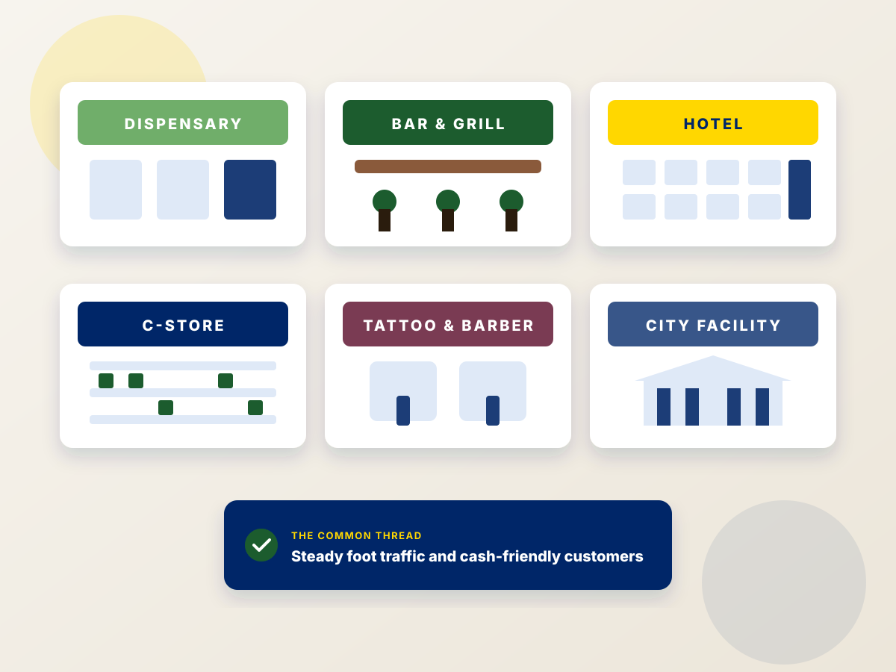

Free ATM placement in St. Albans, VT
Vermont ATM Experts places, cash-loads, and services ATMs for businesses in St. Albans at no cost, and sells Genmega and Hyosung machines to owners who want to keep 100% of the surcharge. Part of the US ATM Experts network.
An ATM company that knows St. Albans
We place and service ATMs in St. Albans and Franklin County, the commercial center of northwestern Vermont near the Canadian border. Main Street downtown facing Taylor Park supports restaurants, bars, salons, and locally owned shops, while the Route 7 and Interstate 89 corridor anchors hotels, gas stations, and convenience stores serving cross-border travelers and commuters. Swanton and Enosburg Falls add village businesses, and Lake Champlain's bays bring summer boaters and campers who keep cash demand steady.
Every St. Albans placement includes free installation, all the cash the machine needs, 24/7/365 monitoring, and a revenue share paid each month by the 10th of the following month. If you'd rather own your ATM, every machine we sell includes free processing, programming, and an Origin Wireless Router.
- Free placement for bars, restaurants, hotels, dispensaries, C-stores, salons, and more
- Cash load prediction so St. Albans machines never run empty
- Over 99% uptime with dedicated account support
- ATM sales with 100% of the surcharge to you

Where we place ATMs in St. Albans
We serve all of St. Albans, including these areas.
Nearby service areas: Burlington · Essex · Stowe
Free ATM placement in St. Albans in four steps
Tell us about your location
Give us a call or reach out through the contact button on this page. We'll ask about foot traffic, hours, and space.
Site analysis
We recommend the right machine, surcharge, and withdrawal limit for your St. Albans customers.
Free install & cash load
We deliver, install, and stock the ATM. You supply a standard 110v outlet.
Get paid monthly
If you opt for a revenue share, you receive your split each month by the 10th of the following month.
See our earnings estimates, learn about ATM processing, or browse ATMs for sale.
St. Albans ATM FAQs
Do you offer free ATM placement in St. Albans?
Yes. Our free ATM placement program is available to qualifying businesses in St. Albans and throughout Northern Vermont. We supply the machine, install it, load and manage the cash, and monitor it around the clock. You provide a standard 110v outlet, and we provide you with fair revenue share options.
How quickly can you install an ATM in St. Albans?
Most St. Albans installations are scheduled within days of approval. Tell us about your location and foot traffic, and we'll recommend the right machine and get it on the calendar.
Can I buy an ATM for my St. Albans business instead?
Yes. We sell Genmega and Nautilus Hyosung ATMs with free processing, programming, an Origin Wireless Router, free shipping and handling within the lower 48 states, real-time online reporting, a 2 year manufacturer's warranty, and 100% of the surcharge revenue. See our equipment page.
Do you service dispensaries in St. Albans?
Yes. We're the largest cannabis ATM company in the country, and our dispensary ATMs are 100% compliant, with the dispensary's real name and address on customer bank statements. Learn more on our dispensary ATM page.
Get an ATM for your St. Albans business
Call us with your location details and we'll tell you whether it qualifies for free placement and what you can expect to earn.